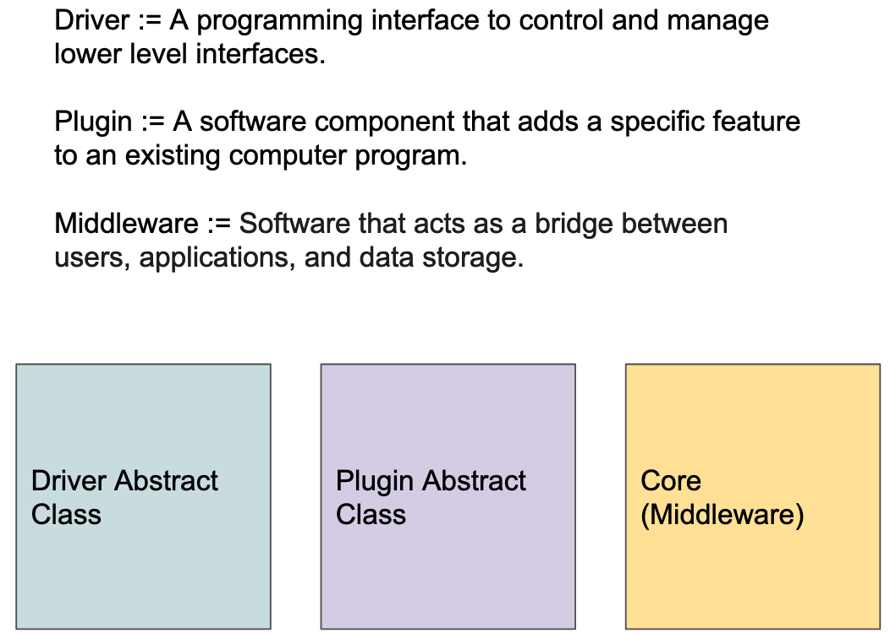
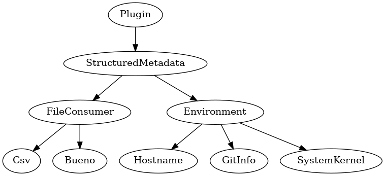
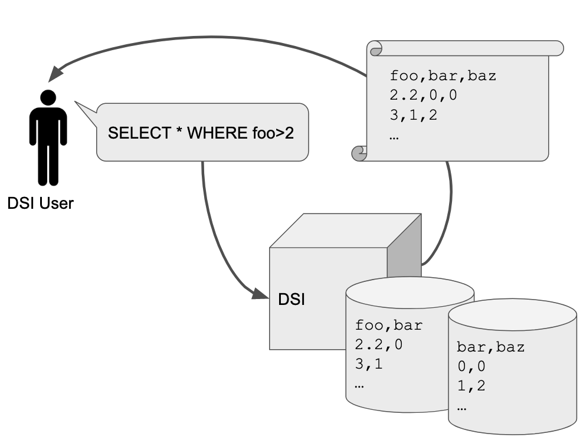

Introduction
The goal of the Data Science Infrastructure Project (DSI) is to provide a flexible, AI-ready metadata query capability which returns data subject to strict, POSIX-enforced file security. The data lifecycle for AI/ML requires seamless transitions from data-intensive/AI/ML research activity to long-term archiving and share data repositories. DSI enables flexible, data-intensive scientific workflows that meet researcher needs.

DSI system design is driven by experiences which satisfy User Stories. DSI uses Object Oriented design principles to encourage modularity and to support contributions by the user community.
Implementation
The DSI system is composed of three fundamental parts:
{kind=link}
DSI Core Middleware
DSI’s core middleware is focused on delivering user-queries on unified metadata which are distributed across many files and security domains. DSI currently supports Linux, and is tested on RedHat- and Debian-based distributions. The DSI Core middleware is a home for DSI Plugins and an interface for DSI Drivers.
Plugin Abstract Classes
Plugins transform an arbitrary data source into a format that is compatible with our middleware. We call the parsed and queriable attributes “metadata” (data about the data). Metadata share the same security profile as the source data.
Plugins can operate as data consumers or data producers. A simple data consumer might parse an application’s output file and place it into a middleware compatible data structure: Python built-ins and members of the popular Python collection module. A simple data producer might execute an application to supplement existing data and queriable metadata.
Plugins are defined by a base abstract class, and support child abstract classes which inherit the properties of their ancestors.
Driver Abstract Classes
Drivers are an interface between the User and the Core, or an interface between the Core and a storage medium. Drivers can operate as Front-ends or Back-ends, and a Driver contributor can choose to implement one or both. Driver front-ends are built to deliver an experience which is compatible with a User Story. A simple supporting User Story is a need to query metadata by SQL query. Because the set of queriable metadata are spread across filesystems and security domains, a supporting Driver Back-end is required to assemble query results and present them to the DSI core middleware for transformation and return, creating an experience which is compatible with the User Story.
{kind=link}